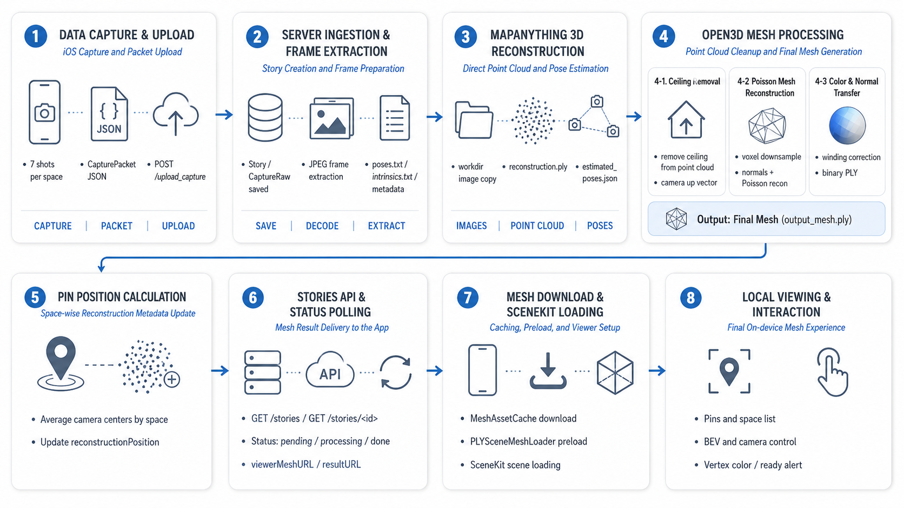
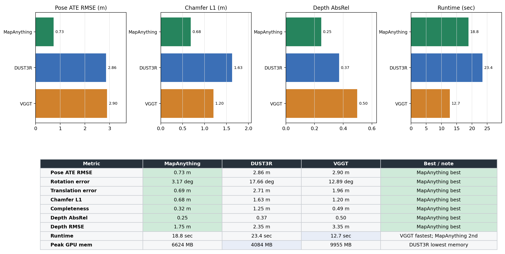
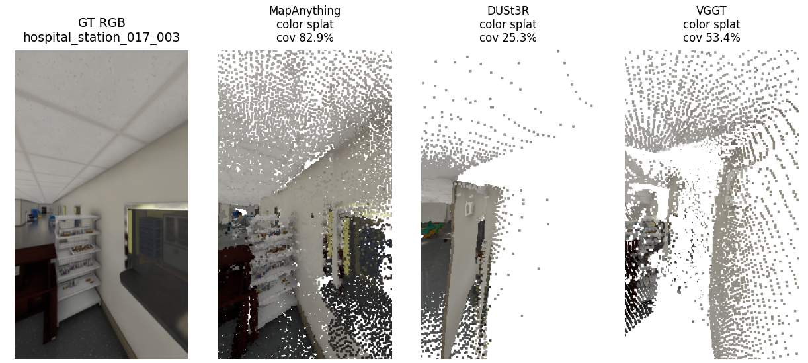
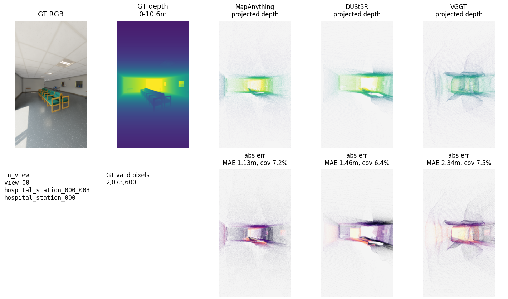
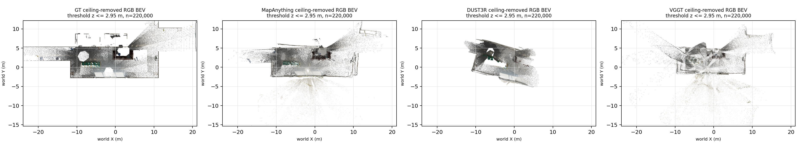
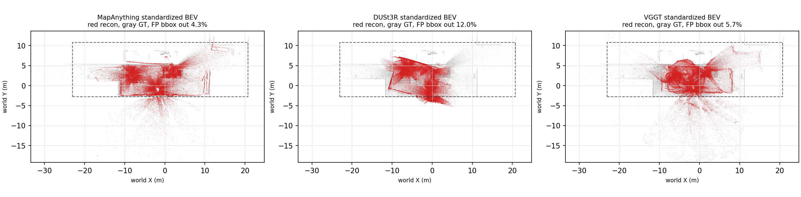
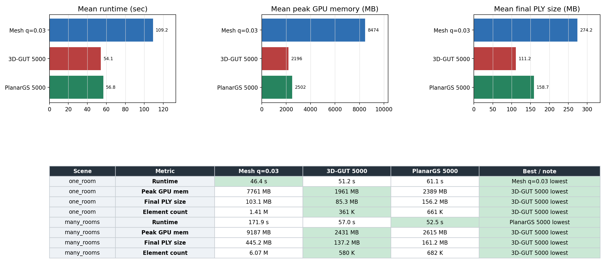
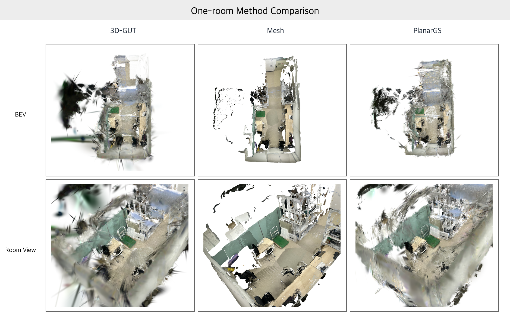
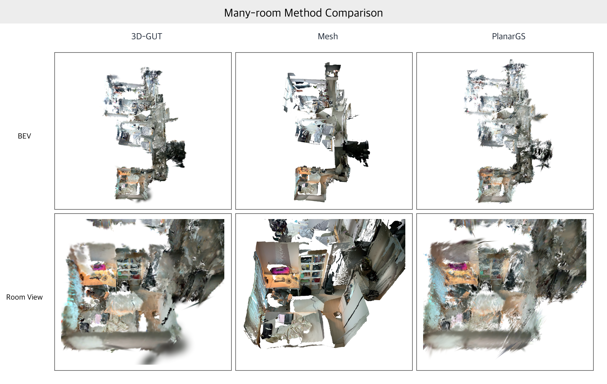
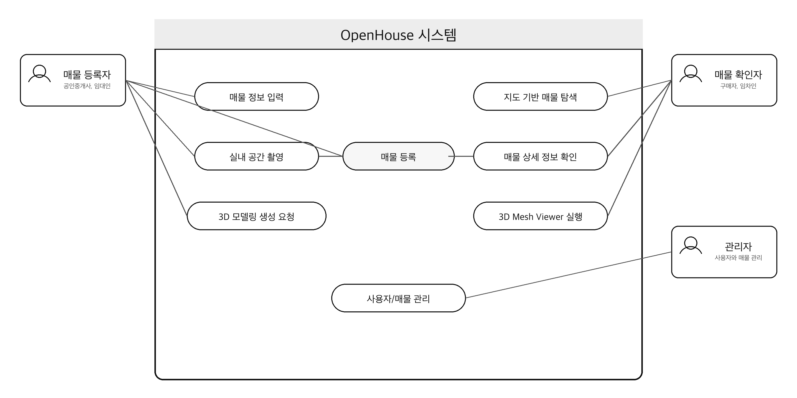

내가 맡은 일
- 매물 복원에 적합한 3D reconstruction 방법 탐색
- 모바일 기기로 실제 가정집 데이터를 수집하고 3D reconstruction 진행 및 검증
- 후처리 천장 제거 알고리즘 구현
- Poisson mesh reconstruction 파라미터 튜닝
프로젝트 개요
직방, 다방, 네이버부동산 등 국내 플랫폼을 통한 온라인 매물 탐색이 보편화되었지만, 사진과 영상만으로는 방의 연결 관계, 실제 크기, 이동 동선을 판단하기 어렵다. 사진은 렌즈와 촬영 각도에 따라 공간감이 달라지고, 영상은 촬영자가 정한 경로 밖을 확인할 수 없다. Matterport와 같은 전문 3D 공간 서비스는 높은 품질을 제공하지만 촬영 조건과 운영 비용이 일반 매물 등록 과정에 부담이 될 수 있다.
각도, 렌즈, 편집에 따라 공간이 다르게 보이며 방 사이의 연결 관계를 한눈에 파악하기 어렵다.
연속적인 분위기는 전달하지만 사용자가 원하는 위치와 시점을 자유롭게 다시 확인하기 어렵다.
공간 탐색 품질은 높지만 별도 장비, 촬영 조건, 처리 비용이 일반 사용자에게 진입 장벽이 된다.
OpenHouse는 이 간극을 줄이기 위해 스마트폰으로 수집한 실내 이미지를 자동으로 3D mesh로 재구성하고, 사용자가 현장 방문 전에 구조와 동선을 자유 시점으로 살펴보도록 설계했다.
별도 스캔 장비 없이도 방의 구조, 동선, 크기감, 가구 배치 가능성을 전달하고, 사진 중심 매물 정보에서 발생하는 공간 정보의 불확실성을 줄이는 것.
iOS 앱과 AR 가이드로 실내 이미지를 수집하고 메타데이터와 함께 업로드한다.
MapAnything의 geometry를 Open3D와 Poisson reconstruction으로 surface mesh로 변환한다.
완성된 mesh를 앱으로 전달하고 SceneKit viewer에서 매물 내부를 확인한다.
구현 파이프라인
촬영 데이터가 앱을 떠난 뒤 서버에서 reconstruction과 mesh 후처리를 거쳐 다시 모바일 viewer로 돌아오는 과정을 하나의 비동기 파이프라인으로 연결했다.

- Data Capture & UploadiOS 앱에서 촬영한 이미지와 메타데이터를 하나의 패킷으로 구성해 서버로 전송.
- Server Ingestion업로드 데이터를 저장하고 reconstruction에 필요한 frame과 metadata를 추출.
- MapAnything ReconstructionRGB image에서 camera pose와 dense point cloud를 생성.
- Open3D Mesh Processingceiling removal, Poisson reconstruction, color와 normal transfer를 적용.
- Async Delivery상태 polling, reconstruction metadata 갱신, mesh caching과 preload를 처리.
- SceneKit Viewing완성된 mesh를 모바일 viewer에서 회전하고 자유 시점으로 확인.
평가 1. Reconstruction baseline 선정
초기에는 photorealistic한 결과를 목표로 3DGS와 COLMAP 기반 SfM을 검토했다. 그러나 가정집의 흰 벽과 바닥처럼 texture가 부족한 영역에서는 feature matching이 자주 실패했고, 안정적인 camera pose와 geometry를 확보하기 어려웠다.
COLMAP SfM으로 pose를 구하고 photorealistic한 scene을 만드는 방향에서 출발.
흰 벽과 바닥에서 feature matching이 끊기며 가정집 데이터의 SfM 안정성이 낮아짐.
스티커는 사용 편의성을 해치고, 연속 image stream은 사용자의 촬영 부담을 키움.
적은 수의 이미지에서도 data-driven prior로 pose와 dense geometry를 함께 추정하는 방식으로 전환.
최종 baseline은 image-only 환경에서 안정적인 모델을 고르기 위해 Isaac Simulator hospital scene의 3개 sector에서 7장씩, 총 21장의 입력 이미지를 사용해 선정했다. MapAnything, DUST3R, VGGT를 pose, geometry, depth와 runtime 관점에서 비교했다.
3 sectors × 7 views
MapAnything · DUST3R · VGGT
복원 구조와 GT 사이 거리
입력 view의 깊이 오차





MapAnything은 pose error, geometry alignment, projected depth error와 BEV false-positive ratio에서 전반적으로 안정적인 결과를 보였다. OpenHouse의 기준 reconstruction 모델로 MapAnything을 채택하고, 이후 평가는 이 결과를 mesh로 변환하는 흐름을 중심으로 진행했다.
평가 2. Mesh의 서비스 적합성
MapAnything 결과를 Poisson mesh로 변환했을 때 부동산 매물 확인 경험에 적합한지 검토했다. 비교 대상은 Mesh, 3D-GUT, PlanarGS이며, one-room과 many-room 환경에서 BEV, Room View, runtime, GPU memory, 최종 파일 크기를 확인했다.



벽, 바닥, 방 경계를 읽기 쉽고 ceiling removal과 구조 후처리를 적용하기 편하다.
SceneKit에서 바로 다룰 수 있어 선택, 충돌, 측정 같은 상호작용으로 확장하기 쉽다.
many-room 환경에서는 처리 시간과 결과 크기가 증가해 simplification과 streaming이 필요하다.
3DGS 계열은 렌더링 표현력과 결과 크기에서 강점이 있다. OpenHouse는 매물의 구조 확인, 후처리 가능성, 모바일 viewer 연동을 우선해 mesh를 최종 결과 형식으로 선택했다.
서비스 구조
OpenHouse는 국내 부동산 플랫폼의 매물 탐색 흐름에 3D 실내 확인 기능을 연결하는 형태로 설계했다. 등록자는 매물 정보와 촬영 데이터를 올리고, 확인자는 지도와 상세 화면을 거쳐 3D Mesh Viewer를 실행한다.
| 사용자 | 주요 기능 | 제공 가치 |
|---|---|---|
| 매물 등록자 | 매물 정보 입력, 실내 촬영, 3D 모델 생성 요청 | 스마트폰만으로 입체적인 매물 정보 등록 |
| 매물 확인자 | 지도 탐색, 상세 정보 확인, 3D Mesh Viewer 실행 | 방문 전 구조, 동선, 공간감 확인 |
| 관리자 | 사용자, 매물, 처리 오류 관리 | 서비스 운영과 reconstruction 작업 관리 |

프로젝트 결과
OpenHouse는 iOS 촬영, 서버 업로드, 3D reconstruction, mesh 후처리, SceneKit viewer를 하나의 서비스 흐름으로 연결했다. 평가를 통해 MapAnything을 기준 모델로 선정했고, 모바일 매물 확인에는 명시적인 surface와 viewer 연동성이 있는 mesh가 적합하다고 판단했다.
향후 계획
향후 개발은 reconstruction 품질을 먼저 검증하고, 실제 사용자가 공간을 더 정확하고 빠르게 이해하는지 확인한 뒤 서비스 기능을 확장하는 순서로 진행한다.
- 품질 기준과 사용자 검증 방 경계, 문 연결 관계, reconstruction 성공률, 공간 측정 오차와 viewer 로딩 시간을 측정하고, 사용자 테스트로 구조·동선 판단과 매물 검토 시간이 실제로 개선되는지 확인한다.
- Reconstruction 품질 개선 Scene2Scene과 같은 scene completion 방법과 촬영 가이드를 검토하고, 원룸·다실·복층에서 구조 누락과 잘못된 연결이 발생하는 조건을 기록한다.
- 배포 최적화와 기능 확장 Mesh simplification, compression, streaming으로 모바일·서버 비용을 줄인 뒤 자동 평면도와 공간 측정을 연결한다. 가구 배치 기능은 측정 정확도와 모바일 성능이 확보된 이후 추가한다.
Comments